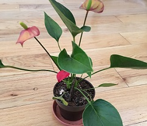
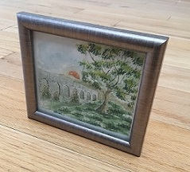
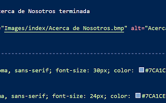
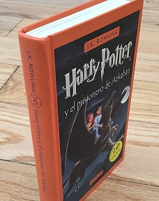

Inicio Clases Juegos Actividades Manualidades Servicios Contáctanos Acerca de Nosotros
Aquí hay actividades que puedes hacer durante la cuarentena. No importa si seas un adulto o un niño. Esperamos que les gusten. (Ve hasta abajo para ver cuidados para el Covid 19)
Aquí hay actividades que puedes hacer tu mismo, ya sean para entretenerte, o juegos.
Si quieres hacer manualidades, ve a la pestaña Manualidades
Si quieres jugar juegos, ve a la pestaña Juegos
Si te consigues semillas, puedes empezar a plantar flores y/o plantas. Es muy bonito hacerlo. ¡El holor de las flores y sus diseños son fantásticos! ¡Tal vez hasta ya no tengas que ir a comprar fresas pronto!
Busca en tu navegador, o en la vida real algo que te guste, luego píntalo. También puedes tomar cursos de pintura, como el que tenemos en la pestaña Clases.
Puedes empezar a programar. Cuando aprendas a programar, puedes llegar a hacer cosas muy utiles en la computadora, ya sea para ti o para los demás. También puedes buscar clases para hacerlo (hay clases sobre ello en la pestaña Clases).
Escoge un tema que te guste, y busca libros sobre ello. Eventualmente encontrarás un libro que te agrade. Leer ayuda mucho a la gente. Puedes buscar libros en Gandhi, Sótano, o más.
Puedes empezar colecciones de hojas, rocas, estampas, etc, luego puedes pegarlas en cartón, y al lado poner información sobre ella/o. Puedes poner que es, sobre que es, que tipo es, donde lo encontraste, quien te lo dio, etc.
No se si lo sabías, pero hay juegos de mesa para una persona. Puedes buscarlas por internet, y empezar a jugar.

Tal vez no lo creas, pero hasta los juegos de vide ayudan a estimular la mente. Asi que también juega videojuegos una/s horas, y luego puedes hacer otras cosas de esta lista.
Puedes hacerte con ideas y hacerlas. ¡Las cosas que pudes hacer no tienen límites! Piensa en las cosas que te gustan, hazte con ideas, y ¡hazlas o invéntalas! Tal vez hasta hayan clases sobre ello.
Hay cosas que pudes hacer con tu familia o amigos. Aquí hay algunas de esas cosas que puedes hacer. No importa si eres un niño o un adulto.
Hay manualidades en la pestaña Manualidades.
Hay juegos en la pestaña Juegos.
Juega con tu familia o amigos juegos de mesa que les gusten. También pueden conseguir muchos para que si se aburren de uno, vayan por otro, ¡o hasta hacer una noche de juegos!
Puedes empezar a programar con tus amigos. Cuando aprendan a programar, pueden llegar a hacer cosas muy utiles en la computadora, ya sea para ti o para los demás. Recuerda que mientras más personas colaboren, más rápido será, y más eficiente. También puedes buscar clases para hacerlo (hay clases sobre ello en la pestaña Clases).
Puedes empezar colecciones de hojas, rocas, estampas, etc. con tus amigos y familiares. Puedes pegarlas en cartón, y al lado poner información sobre ella/o. Puedes poner que es, sobre que es, que tipo es, donde lo encontraste, quien te lo dio, etc.También puedes enviar a los integrantes a buscarlos, y luego se reunen a poner los datos.
Tal vez no lo creas, pero hasta los juegos de vide ayudan a estimular la mente. Asi que también juega videojuegos una/s horas, y luego puedes hacer otras cosas de esta lista.
Hay cosas que pudes para cuidarte del Covid 19, aquí, aparecerán consejos para evitar que te llegue, y que si ya lo tienes, estar preparado para que no te llegue tan fuerte.
Es importante hacer ejercicio para que el cuerpo esté más fuerte y sano si te llega el Covid, y más beneficios.
Si comes sano, vas a estar bien nutrido para defenderte del Covid, y que te llege menos feo. Además, comiendo sano obtienes nutrientes que te van a ayudar no solo para el Covid.
Si usas cubrebocas, reduces la posibilidad de que tu pases el Covid a los demás y que a ti te llegue.
Si tu comida tiene Covid y sí te la comes, entonces el Covid va a llegar a tu cuerpo, así que desinfecta tu comida, o al menos el empaque antes de comértela.
Si tienes Covid en las manos, te lo puedes quitar lavándotelas. Como todas las cosas pueden llegar a tener Covid, y más en las calles, lávate las manos cada vez que vuelvas a la casa.
Por Regrepsa Shmilton